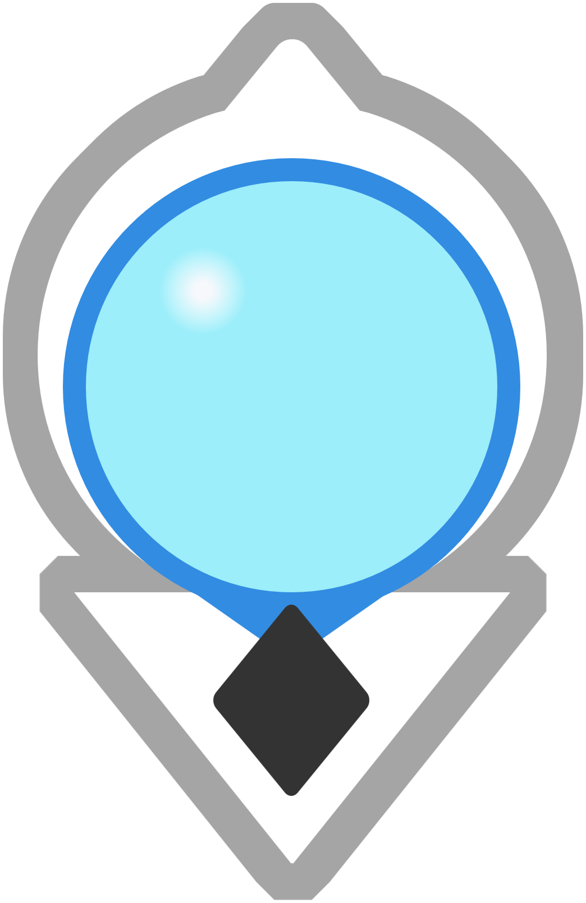

<!doctype html>
<html lang="zh-CN">
<head>
  <meta charset="utf-8" />
  <meta name="viewport" content="width=device-width,initial-scale=1" />
  <title>Custom CRS Map Demo (assets/main.png + custom markers + road levels + sidebar)</title>

  <!-- Leaflet CDN -->
  <link
    rel="stylesheet"
    href="https://unpkg.com/leaflet@1.9.4/dist/leaflet.css"
    integrity="sha256-p4NxAoJBhIIN+hmNHrzRCf9tD/miZyoHS5obTRR9BMY="
    crossorigin=""
  />
  <script
    src="https://unpkg.com/leaflet@1.9.4/dist/leaflet.js"
    integrity="sha256-20nQCchB9co0qIjJZRGuk2/Z9VM+kNiyxNV1lvTlZBo="
    crossorigin=""
  ></script>

  <style>
    html, body { height: 100%; margin: 0; font-family: -apple-system,BlinkMacSystemFont,"Segoe UI",Roboto,"PingFang SC","Hiragino Sans GB","Microsoft YaHei",Arial,sans-serif; color:#111; }
    .app { height: 100%; display: grid; grid-template-columns: 1fr 360px; }
    #map { height: 100%; width: 100%; background:#f5f5f5; }

    .sidebar { height: 100%; border-left: 1px solid #e6e6e6; background: #d9d3c9; display: flex; flex-direction: column; }
    .sidebar-header { background: #3e4556; padding: 14px 14px 10px 14px; border-bottom: 1px solid #eee; display:flex; align-items:center; justify-content:space-between; gap:12px;  }
    .sidebar-header h2 { color: #d1bd8c; margin: 0; font-size: 14px; font-weight: 650; line-height: 1.2; }
    .sidebar-header .meta { font-size: 12px; color: #d1bd8c; margin-top: 4px; }
    .sidebar-body { color: #6b6c74; padding: 14px; overflow: auto; font-size: 16px; line-height: 1.55; }
    .btn { appearance:none; border:1px solid #ddd; background:#fafafa; border-radius:8px; padding:8px 10px; cursor:pointer; font-size:12px; }
    .btn:hover { background:#f2f2f2; }

    .hud {
      position:absolute; top:10px; left:10px; z-index:1000;
      background: #d9d3c9; border:1px solid #e6e6e6; border-radius:10px;
      padding:10px 12px; box-shadow:0 8px 18px rgba(0,0,0,0.08);
      font-size:12px; line-height:1.45; max-width:520px;
    }
    .hud strong { font-weight:650; }
    .hud code { background:#d9d3c9; padding:1px 4px; border-radius:6px; }

    .app.sidebar-hidden { grid-template-columns: 1fr; }
    .app.sidebar-hidden .sidebar { display: none; }

    @media (max-width: 900px) {
      .app { grid-template-columns: 1fr; grid-template-rows: 1fr 260px; }
      .sidebar { border-left: none; border-top: 1px solid #e6e6e6; }
    }
  </style>
</head>

<body>
  <div class="app">
    <div style="position: relative;">
      <div class="hud" id="hud"></div>
      <div id="map"></div>
    </div>

    <aside class="sidebar">
      <div class="sidebar-header">
        <div>
          <h2 id="sidebarTitle">未选择标记</h2>
          <div class="meta" id="sidebarMeta">点击地图上的标记点以查看详细信息</div>
        </div>
          <button class="btn" id="clearSelectionBtn" aria-label="关闭">
            
          </button>
      </div>
      <div class="sidebar-body" id="sidebarBody">
        <p>本 Demo 使用自定义坐标系 <code>L.CRS.Simple</code>。</p>
        <ul>
          <li><strong>坐标约定：</strong>使用平面坐标（像素），点位用 <code>(x, y)</code></li>
          <li>Leaflet 内部坐标为 <code>[y, x]</code>（即 <code>[lat, lng]</code>）</li>
          <li>底图文件：当前目录 <code>assets/main.png</code></li>
        </ul>
      </div>
    </aside>
  </div>

  <script src="./data/markers.js"></script>
  <script src="./data/roads.js"></script>
  <script>
    /**
     * =========================
     * 你需要配置的核心参数
     * =========================
     * 1) assets/main.png 的像素宽高（务必填写正确）
     * 2) 各类元素（markers/roads）的坐标以像素为单位：(x, y)
     */
    const CONFIG = {
      image: {
        url: "./assets/main.png",
        width: 2352,   // <-- 改成你的 assets/main.png 实际宽度（像素）
        height: 2628,  // <-- 改成你的 assets/main.png 实际高度（像素）
        opacity: 1.0
      },

      // CRS.Simple 下 zoom 的语义：0 通常是“刚好看见整张图”的附近；越大越放大
      // 你可以按体验调整范围
      zoom: {
        min: -2,
        max: 4,
        initial: 0,
        // snap: 0.25,
        // delta: 0.25,
        // controlPosition: 'bottomright'
      },

      // 道路分级显示规则：zoom >= minZoom 才显示该 level
      // CRS.Simple 下的 zoom 阈值与你之前 OSM 的阈值不同，通常需要重新设定
      roadLevelRules: [
        { level: 1, minZoom: -2 }, // 大范围也显示
        { level: 2, minZoom: 0  }, // 中等放大显示
        { level: 3, minZoom: 2  }, // 更大放大才显示
      ],

      // 标记图标分级显示规则：zoom >= minZoom 才显示该 level
      markerLevelRules: [
        { level: 1, minZoom: -2 }, // 大范围也显示
        { level: 2, minZoom: -1  },// 稍放大显示
        { level: 3, minZoom: 0  }, // 中等放大显示
        { level: 4, minZoom: 1  }, // 放大显示
        { level: 5, minZoom: 2  }  // 最大放大才显示
      ],

      // 标记名称显示已移除（不使用 tooltip）
    };

    /**
     * =========================
     * Demo 数据（坐标单位：像素）
     * =========================
     * 注意：Leaflet marker/polyline 用的是 [y, x] 顺序。
     * 我们用 helper: toLatLng(x,y) 来统一转换。
     */
    const markers = Array.isArray(window.markers) ? window.markers : [];
    const roads = Array.isArray(window.roads) ? window.roads : [];

    /**
     * =========================
     * 初始化地图（CRS.Simple）
     * =========================
     */
    const map = L.map("map", {
      crs: L.CRS.Simple,
      minZoom: CONFIG.zoom.min,
      maxZoom: CONFIG.zoom.max,
      attributionControl: false,
      zoomControl: true,
      zoomDelta: 0.5, // 缩放步进
      zoomSnap: 0.5, // 缩放贴合：强制为此值的倍数
      preferCanvas: true
    });
    map.zoomControl.setPosition("bottomleft");

    // 图像边界：CRS.Simple 下 bounds 直接用“平面坐标”（这里用像素）
    const imageBounds = [
      [0, 0], // [y, x] 左上角
      [CONFIG.image.height, CONFIG.image.width] // [y, x] 右下角
    ];

    // 底图：assets/main.png
    const overlay = L.imageOverlay(CONFIG.image.url, imageBounds, { opacity: CONFIG.image.opacity });
    overlay.addTo(map);

    // 限制视野在图片范围附近（可选，但推荐）
    map.setMaxBounds(imageBounds);
    map.fitBounds(imageBounds);
    map.setZoom(CONFIG.zoom.initial);

    /**
     * =========================
     * Helper：统一坐标转换
     * =========================
     */
    function toLatLng(x, y) {
      // Leaflet 在 CRS.Simple 下仍然使用 [lat,lng] 语义，这里约定 lat=y, lng=x
      return [y, x];
    }

    /**
     * =========================
     * 侧边栏
     * =========================
     */
    const appRoot = document.querySelector(".app");
    const sidebarTitle = document.getElementById("sidebarTitle");
    const sidebarMeta = document.getElementById("sidebarMeta");
    const sidebarBody = document.getElementById("sidebarBody");
    document.getElementById("clearSelectionBtn").addEventListener("click", clearSidebar);

    function setSidebarVisible(visible) {
      appRoot.classList.toggle("sidebar-hidden", !visible);
    }

    function escapeHtml(str) {
      return String(str)
        .replaceAll("&", "&amp;")
        .replaceAll("<", "&lt;")
        .replaceAll(">", "&gt;")
        .replaceAll('"', "&quot;")
        .replaceAll("'", "&#039;");
    }

    function showMarkerInSidebar(markerData) {
      setSidebarVisible(true);
      sidebarTitle.textContent = markerData.name;
      sidebarMeta.textContent = `ID: ${markerData.id} · 类型: ${markerData.info?.type ?? "-"}`;

      const info = markerData.info ?? {};
      const tags = Array.isArray(info.tags) ? info.tags : [];

      sidebarBody.innerHTML = `
        <div style="display:flex; flex-direction:column; gap:10px;">
          <div>
            <div style="font-size:12px; color:#666;">描述</div>
            <div>${escapeHtml(info.description ?? "—")}</div>
          </div>

          <div>
            <div style="font-size:12px; color:#666;">坐标（像素）</div>
            <div>x: ${markerData.x.toFixed(1)}, y: ${markerData.y.toFixed(1)}</div>
          </div>

          <div>
            <div style="font-size:12px; color:#666;">标签</div>
            <div>${tags.length ? tags.map(t => `<span style="display:inline-block;border:1px solid #eee;background:#fafafa;border-radius:999px;padding:3px 8px;margin:4px 6px 0 0;font-size:12px;">${escapeHtml(t)}</span>`).join("") : "—"}</div>
          </div>

          <div>
            <div style="font-size:12px; color:#666;">最后更新</div>
            <div>${escapeHtml(info.updatedAt ?? "—")}</div>
          </div>

          <div>
            <div style="font-size:12px; color:#666;">原始数据（示例）</div>
            <pre style="margin:0;background:#f7f7f7;border:1px solid #eee;border-radius:10px;padding:10px;overflow:auto;">${escapeHtml(JSON.stringify(markerData, null, 2))}</pre>
          </div>
        </div>
      `;
    }

    function clearSidebar() {
      sidebarTitle.textContent = "未选择标记";
      sidebarMeta.textContent = "点击地图上的标记点以查看详细信息";
      sidebarBody.innerHTML = `<p>已清除选择。</p><p>继续点击标记点以查看详细信息。</p>`;
      setSidebarVisible(false);
    }

    /**
     * =========================
     * 道路分级显示/隐藏
     * =========================
     */
    const roadLayersByLevel = new Map();

    function initRoadLayers() {
      for (const rule of CONFIG.roadLevelRules) {
        if (!roadLayersByLevel.has(rule.level)) {
          roadLayersByLevel.set(rule.level, L.layerGroup().addTo(map));
        }
      }

      for (const r of roads) {
        const latlngs = r.points.map(p => toLatLng(p.x, p.y));
        const polyline = L.polyline(latlngs, {
          weight: r.level === 1 ? 6 : (r.level === 2 ? 4 : 3),
          opacity: 0.9
        });
        polyline.bindTooltip(`${r.name} (L${r.level})`, { sticky: true });

        const group = roadLayersByLevel.get(r.level);
        if (group) group.addLayer(polyline);
      }
    }

    function updateRoadVisibility() {
      const z = map.getZoom();
      const visibleLevels = new Set(
        CONFIG.roadLevelRules.filter(rule => z >= rule.minZoom).map(rule => rule.level)
      );

      for (const [level, group] of roadLayersByLevel.entries()) {
        const shouldShow = visibleLevels.has(level);
        const onMap = map.hasLayer(group);
        if (shouldShow && !onMap) group.addTo(map);
        if (!shouldShow && onMap) map.removeLayer(group);
      }
    }

    /**
     * =========================
     * Marker（支持自定义图标 png/svg/jpg 或 divIcon）
     * =========================
     */
    const markerLayersByLevel = new Map();
    const markerObjects = [];

    function initMarkerLayers() {
      for (const rule of CONFIG.markerLevelRules) {
        if (!markerLayersByLevel.has(rule.level)) {
          markerLayersByLevel.set(rule.level, L.layerGroup().addTo(map));
        }
      }
    }

    function createLeafletIcon(iconSpec) {
      if (iconSpec?.divIcon) {
        return L.divIcon({
          html: iconSpec.html ?? "",
          className: "",
          iconSize: iconSpec.size ?? [16, 16],
          iconAnchor: iconSpec.anchor ?? [8, 8]
        });
      }
      return L.icon({
        iconUrl: iconSpec?.url ?? "./marker.png", // 你若提供 marker.png，则可直接用
        iconSize: iconSpec?.size ?? [28, 28],
        iconAnchor: iconSpec?.anchor ?? [14, 28]
      });
    }

    function initMarkers() {
      for (const m of markers) {
        const icon = createLeafletIcon(m.icon);
        const leafletMarker = L.marker(toLatLng(m.x, m.y), { title: m.name, icon });

        leafletMarker.on("click", (e) => {
          L.DomEvent.stopPropagation(e);
          showMarkerInSidebar(m);
        });

        const group = markerLayersByLevel.get(m.level) ?? markerLayersByLevel.get(1);
        if (group) {
          leafletMarker.addTo(group);
        } else {
          leafletMarker.addTo(map);
        }
        markerObjects.push({ data: m, leafletMarker });
      }
    }

    function updateMarkerVisibility() {
      const z = map.getZoom();
      const rulesByLevel = new Map(CONFIG.markerLevelRules.map(rule => [rule.level, rule]));

      for (const [level, group] of markerLayersByLevel.entries()) {
        const rule = rulesByLevel.get(level);
        const shouldShow = rule ? z >= rule.minZoom : true;
        const onMap = map.hasLayer(group);
        if (shouldShow && !onMap) group.addTo(map);
        if (!shouldShow && onMap) map.removeLayer(group);
      }
    }

    /**
     * =========================
     * HUD：显示 zoom、鼠标坐标、规则
     * =========================
     */
    const hud = document.getElementById("hud");

    function refreshHud(extraLine = "") {
      const z = map.getZoom();
      const c = map.getCenter(); // CRS.Simple 下：c.lat=y, c.lng=x
      const rulesText = CONFIG.roadLevelRules.map(r => `L${r.level}: zoom ≥ ${r.minZoom}`).join(", ");
      const markerRulesText = CONFIG.markerLevelRules.map(r => `L${r.level}: zoom ≥ ${r.minZoom}`).join(", ");

      hud.innerHTML = `
        <div><strong>坐标系：</strong><code>CRS.Simple</code>（平面/像素坐标）</div>
        <div><strong>当前视图：</strong>zoom = <code>${z}</code>,
          center = <code>x=${c.lng.toFixed(1)}, y=${c.lat.toFixed(1)}</code></div>
        <div><strong>道路显示规则：</strong>${escapeHtml(rulesText)}</div>
        <div><strong>标记显示规则：</strong>${escapeHtml(markerRulesText)}</div>
        <div style="color:#666;margin-top:6px;">底图：<code>${escapeHtml(CONFIG.image.url)}</code>，尺寸：<code>${CONFIG.image.width}×${CONFIG.image.height}</code></div>
        ${extraLine ? `<div style="margin-top:6px;"><strong>鼠标：</strong>${extraLine}</div>` : ``}
      `;
    }

    map.on("mousemove", (e) => {
      // e.latlng.lat = y, e.latlng.lng = x
      refreshHud(`x=${e.latlng.lng.toFixed(1)}, y=${e.latlng.lat.toFixed(1)}`);
    });

    map.on("click", () => {
      clearSidebar();
    });

    /**
     * =========================
     * 刷新逻辑：缩放/移动后自动更新显隐
     * =========================
     */
    function refreshAll() {
      updateRoadVisibility();
      updateMarkerVisibility();
      refreshHud();
    }

    map.on("zoomend moveend", refreshAll);

    /**
     * =========================
     * 启动
     * =========================
     */
    initRoadLayers();
    initMarkerLayers();
    initMarkers();
    setSidebarVisible(false);
    refreshAll();
  </script>
</body>
</html>
